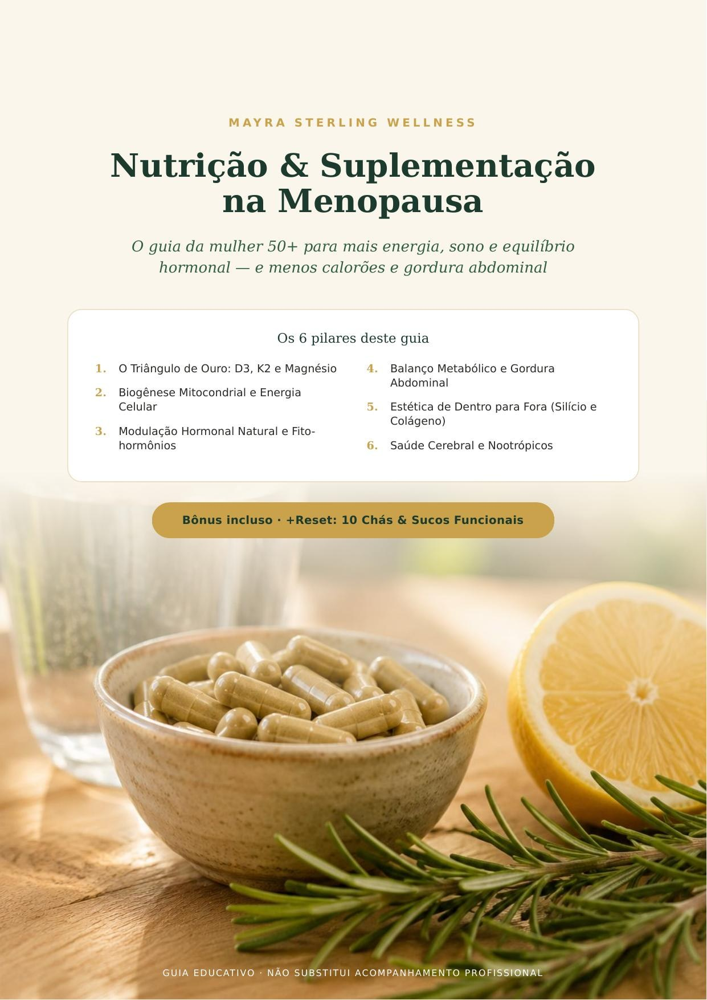
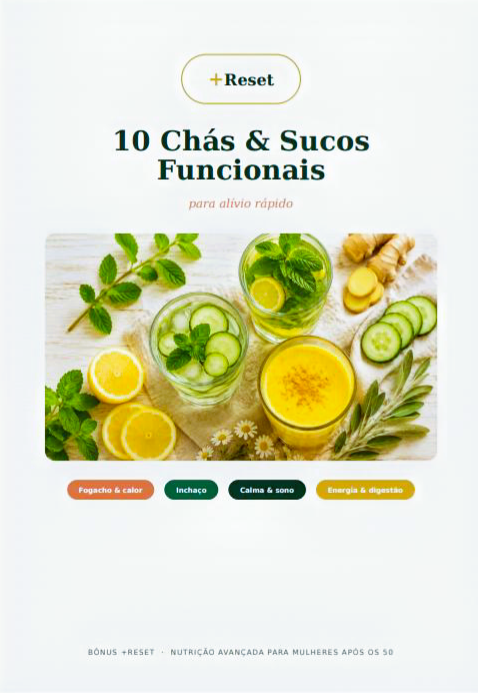

Mais energia, sono reparador e equilíbrio hormonal — e menos calorões e gordura abdominal.

Se você tem 50+ e sente que está perdida entre sintomas da menopausa, dietas milagrosas e prateleiras cheias de suplementos sem saber o que funciona, este guia foi feito para você.
Entenda por que essa combinação é fundamental para ossos, sistema cardiovascular e imunidade, com foco em segurança.
Descubra como a alimentação e suplementação podem apoiar a energia celular para combater a fadiga diária.
Uma introdução clara aos fito-hormônios e estratégias naturais de apoio ao equilíbrio hormonal.
Entenda por que a gordura abdominal aumenta na menopausa e os pilares para reequilibrar o metabolismo sem dietas extremas.
Cuide de pele, cabelo, unhas e estética com base em nutrição profunda, Silício e Colágeno.
Cuidados para memória, foco e clareza mental após os 50, combatendo a névoa mental (brain fog).

Receitas práticas e saborosas para potencializar o seu bem-estar diário, desinchar e melhorar o sono naturalmente.
Adquirir Guia + Bônus na Hotmart